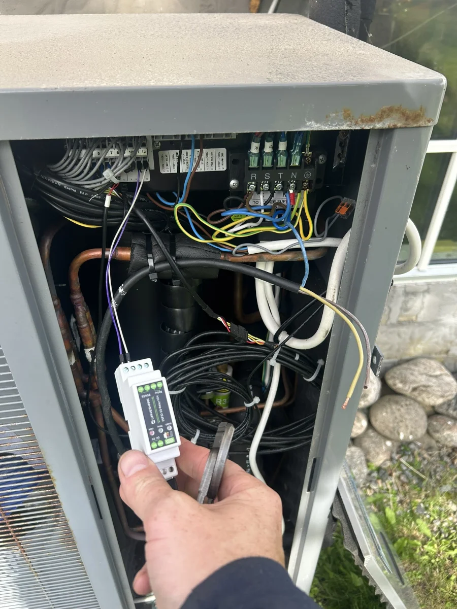

Jag kommer hem till dig och går igenom huset. Vi tittar på vad som drar mest el, jag kopplar upp det och vi gör en energianalys tillsammans. Sedan får du en app som drar ner förbrukningen när elen är som dyrast.

Ett hus utan styrning drar el när det behövs, även när elen är som dyrast. Jag ser till att så mycket som möjligt av förbrukningen flyttas till timmarna när elen är billig.
Appen följer elpriset och visar en prognos för imorgon. När priset går upp gör huset det vi har kommit överens om, till exempel:
Vad som går att styra beror på vad du har hemma. Det går vi igenom när jag är på plats.
Först pratar vi i telefon om ditt hus och vad du vill få ut av det. Sedan kommer jag hem till dig och går igenom hur huset värms upp och var energin tar vägen.
Jag kopplar upp det som drar el, som värmepump, elpanna, varmvattenberedare och laddbox. Sedan gör vi en energianalys tillsammans, så att du ser svart på vitt var pengarna går.
När allt är klart får du appen. Där ser du elpriset idag och imorgon, och huset sköter resten.
Jag hjälper både villaägare och fastighetsbolag.